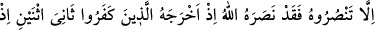
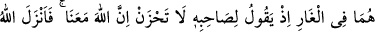
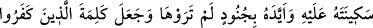
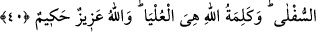

PEYGAMBER EFENDİMİZ’İN HİCRETİ
40. Eğer siz ona yardım etmezseniz, iyi bilin ki, Allah ona yardım etmişti: Hani
yalnız iki kişiden biri olduğu halde, inkar edenler kendisini (Mekke’den)
çıkardıkları sırada ikisi mağarada iken arkadaşına: “Üzülme, Allah bizimle
beraberdir.” diyordu. Allah ona sekînetini indirdi ve onu sizin görmediğiniz
askerlerle destekledi; inanmayanların sözünü alçalttı. Üstün olan, yalnız Allah’ın
sözüdür. Allah daima üstündür, hüküm ve hikmet sahibidir.
“Eğer siz ona” Muhammed’e Tebük gazvesinde “yardım etmezseniz, iyi bilin ki”
Muhammed Mekke’den çıkarken “Allah ona yardım etmişti.” Aynı şekilde bu savaşta
da O’na yardım edecektir. “Hani yalnız iki kişiden biri olduğu halde, inkar edenler
kendisini” Mekke’den “çıkardıkları sırada ikisi mağarada iken arkadaşına:
“Üzülme, Allah bizimle beraberdir!” diyordu.”
“Sâniye’s-nesyni “İki kişiden biri” demektir. Yoksa Hz. Peygamber (a.s.)’ın mertebe
bakımından ikinci olduğu anlamında değildir. Çünkü “üçün üçüncüsü”, “dördün
dördüncüsü” ve benzeri ifâdelerde sayısı belirtilenlerden mutlak olarak birisi olduğu
anlatılmak istenir. Yoksa özellikle üçüncü, dördüncü olduğu değil. Âyette sözü edilen
“iki kişi” Ebû Bekir (r.a.) ve Rasûlullah (s.a.)’dir.
“İnkar edenler kendisini (Mekke’den) çıkardıkları sırada” ifadesi, “inkar edenler
kendisini öldürmeye kalkışarak Mekke’den çıkmasına sebeb oldukları sırada”
anlamındadır. Yoksa Hz. Peygamber (a.s.) Mekke’den kâfirlerin kendisini çıkarmaları
sebebiyle değil, Allah’ın izni ve emriyle çıkmıştır.
Âyette geçen “mağara” Sevr’in üst kısımlarında bir mağaradır. Sevr ise Mekke’nin
sağ tarafında bir saatlik mesafede bir dağdır. et-Tibyân’da Mekke’ye yaklaşık iki fersah
mesafede olduğu kaydedilmiştir. el-Kâmûs’ta ise ona “Sevrü Athal” denildiği, dağın
adının aslında Athal olduğu, Sevr b. Abdümenât oraya yerleştiği için ona nisbetle Sevr-
i Athal denildiği ifade edilir. İnsânü’l-uyûn adlı eserde ise şöyle denir: Bu dağ,
kendisiyle tarla sürülen öküz (sevr) görünümünde olduğu için ona “Sevr” adı
verilmiştir.
HİCRET